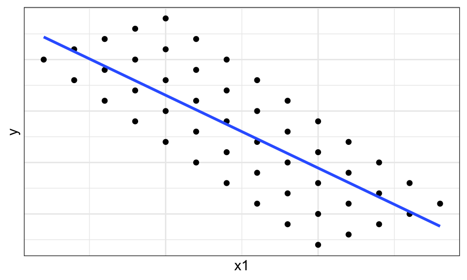
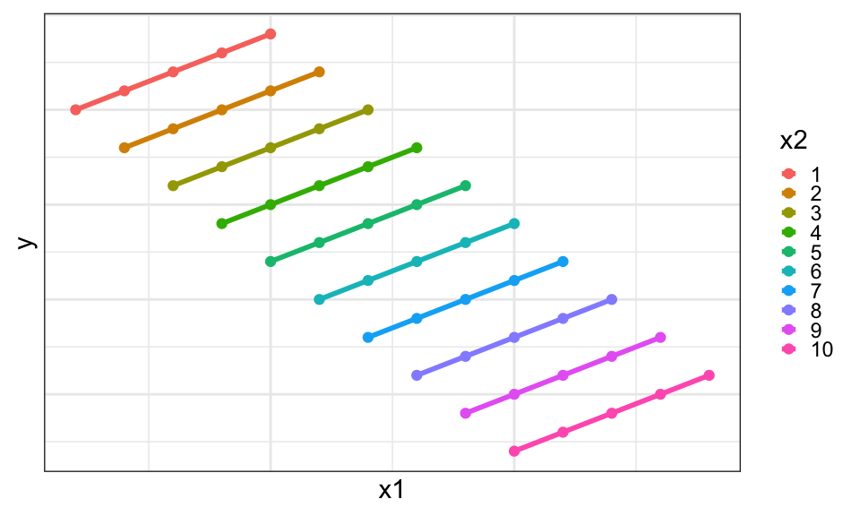

E.g., \(X_{2i}\) is the value of the second explanatory variable for unit \(i\).
With two explanatory variables: \[Y_i = \beta_0 + \beta_1 X_{1i} + \beta_2 X_{2i} + \epsilon_i\]
\(\epsilon_i\) is still ideally normally distributed with mean 0 and constant variance \(\sigma^2\).
Interpreting Coefficients
Consider the model \(Y_i = \beta_0 + \beta_1 X_{1i} + \beta_2 X_{2i} + \epsilon_i\).
To interpret \(\beta_1\) in a randomized experiment:
Conceptually fix \(X_{2i}\) at a value.
Add one to \(X_{1i}\).
\(Y_i\) changes by \(\beta_1\).
\(\beta_1\) is how much \(Y_i\) increases when we add one to \(X_{1i}\) but keep \(X_{2i}\) fixed.
“A one-unit increase in light intensity causes the mean number of flowers to increase by \(\beta_1\).”
To interpret \(\beta_1\) in an observational study:
The \(X_i\)’s cannot be fixed independently of one another.
Consider a subpopulation that has the same values of the \(X_j\)’s, where \(j \neq 1\). Then the expected difference in means between species that differ in \(X_1\) only by one unit is \(\beta_1\).
\(\beta_1\) is the expected difference in \(Y\)’s when we compare units with \(X_1\) and \(X_1 + 1\).
“For any subpopulation of mammal species with the same body weight, species with a one-day longer gestation length have a mean brain weight \(\beta_1\) grams larger.”
Without \(X_2\) in the model — the marginal slope looks negative even though \(\beta_1 = 1\):
ggplot(df_fake, aes(x = x1, y = y)) +geom_point() +geom_smooth(method ="lm", se =FALSE) +theme(axis.text =element_blank(), axis.ticks =element_blank())

With \(X_2\) color-coded — the slope within each level of \(X_2\) is positive (\(= \beta_1 = 1\)), and the parallel lines sit at different heights:
ggplot(df_fake, aes(x = x1, y = y, color = x2)) +geom_point() +geom_smooth(method ="lm", se =FALSE) +theme(axis.text =element_blank(), axis.ticks =element_blank()) +guides(color =guide_legend(keywidth =0.1, keyheight =0.1,default.unit ="inch"))

The figure below shows the same idea using the real brain-size data (case0902):
Left: a single marginal fit line for all 96 species (\(\hat\beta_1 \approx 2.23\)).
Middle: points colored by log(Body) tertile — large-bodied species (green) drive much of the steep marginal slope because they have both long gestations and large brains.
Right: parallel fit lines from the additive model — every body-weight group has the same gestation slope (\(\hat\beta_1 \approx 0.67\)) but sits at a different height, reflecting the body-size effect \(\beta_2\).
The resulting estimates are the OLS (ordinary least squares) estimates: \(\hat\beta_0\), \(\hat\beta_1\), \(\hat\beta_2\).
Use lm() and always save the output:
lmout <-lm(Brain ~ Gestation + Body, data = case0902)lmout
Call:
lm(formula = Brain ~ Gestation + Body, data = case0902)
Coefficients:
(Intercept) Gestation Body
-112.192 1.450 1.033
(Intercept)
Gestation
Body
\(\hat\beta_0\)
\(\hat\beta_1\)
\(\hat\beta_2\)
lmout <-lm(Brain ~ Gestation + Body + Litter, data = case0902)lmout
Call:
lm(formula = Brain ~ Gestation + Body + Litter, data = case0902)
Coefficients:
(Intercept) Gestation Body Litter
-225.2921 1.8087 0.9859 27.6486
(Intercept)
Gestation
Body
Litter
\(\hat\beta_0\)
\(\hat\beta_1\)
\(\hat\beta_2\)
\(\hat\beta_3\)
We would interpret this output as:
“We estimate that species with a 1-day longer gestation time have a mean brain weight 1.8 grams heavier, after adjusting for body weight and litter size.”
“We estimate that species with an average body weight 1 kg heavier have a mean brain weight 0.99 grams heavier, after adjusting for gestation time and litter size.”
“We estimate that species with a litter size one offspring larger have a mean brain weight 27.6 grams heavier, after adjusting for body weight and gestation time.”
Inference
We are usually interested in testing if \(\beta_i = 0\).
We are usually interested in getting confidence intervals on the \(\beta_i\)’s.
We can use the usual \(t\)-tools to get these.
lmout <-lm(Brain ~ Gestation + Body, data = case0902)tidy(lmout)